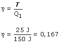
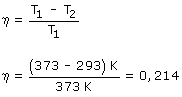

Si toma 150 J de calor y cede 125 J de calor producirá 25 J de trabajo El rendimiento de la máquina será, por definición:  El rendimiento de una máquina de Carnot que trabajase entre las mismas temperaturas sería:  El rendimiento de la máquina sería el 78% (0.167 / 0.214) del rendimiento de la de Carnot |